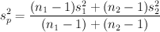

is the sample
mean.
is the sample
mean.
This utility computes confidence intervals for the difference of two population means from two independent samples. The confidence interval estimate of μ1 - &mu2 is:
where E is the margin of error,
is the sample
mean.
If population standard deviations σ1 and σ2 are unknown and are not assumed equal, the margin of error is given by
where n is the sample size, s is the sample standard deviation, and tα/2 is the inverse cumulative probability of Student's t distribution at 1 - α/2. The degree of freedom is given by
where A = s12 / n1 and B = s22 / n2.
If population standard deviations σ1 and σ2 are unknown and are assumed equal, the margin of error is given by
where , and the degree of freedom is n1 + n2 - 2.
If population standard deviations σ1 and σ2 are known, the margin of error is
The sample data of the population must be of only two categories. They can be inputted in one of three ways:
If population standard deviations are known, check the appropriate check box and provide the standard deviations.
Check the Assume population variances are equal check box if the population variances are assumed equal.
The confidence level must be between 0 and 1. For example, enter 0.95 for a 95% confidence level.